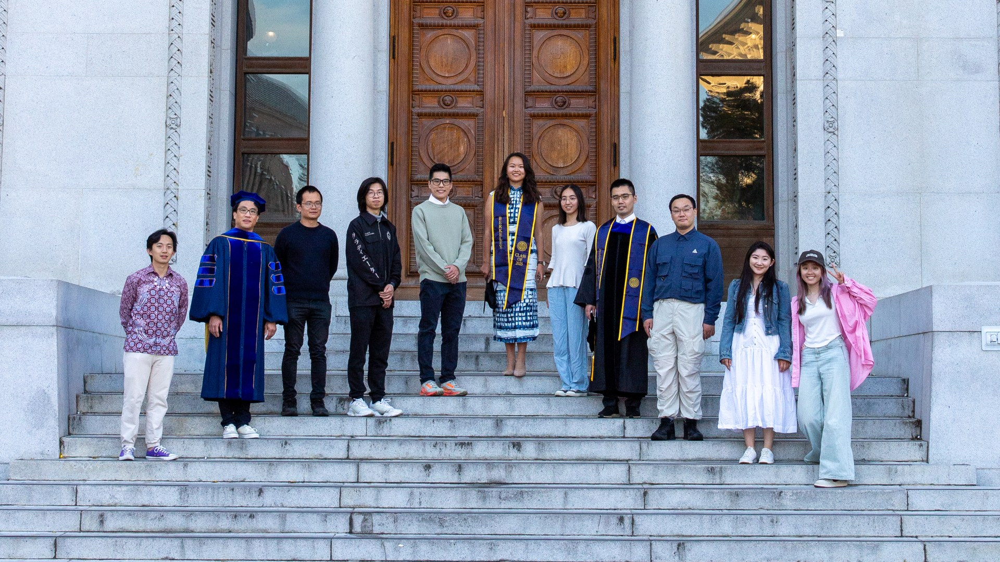

About Us
Datong Society of China Studies at UC Berkeley is a student-led intellectual community bridging diverse academic perspectives on China and East Asia.
We welcome undergraduates, graduate students, and researchers across disciplines—ranging from history and cultural studies to political economy and empirical social science (both qualitative and quantitative).
Our Ethos

We prioritize high-density intellectual exchange in an open, collaborative setting.
Whether you are pursuing formal China studies or applying social science methods to East Asian issues, Datong provides a space for critical inquiry and interdisciplinary learning.